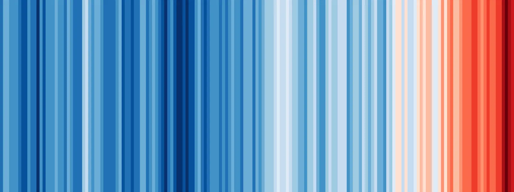
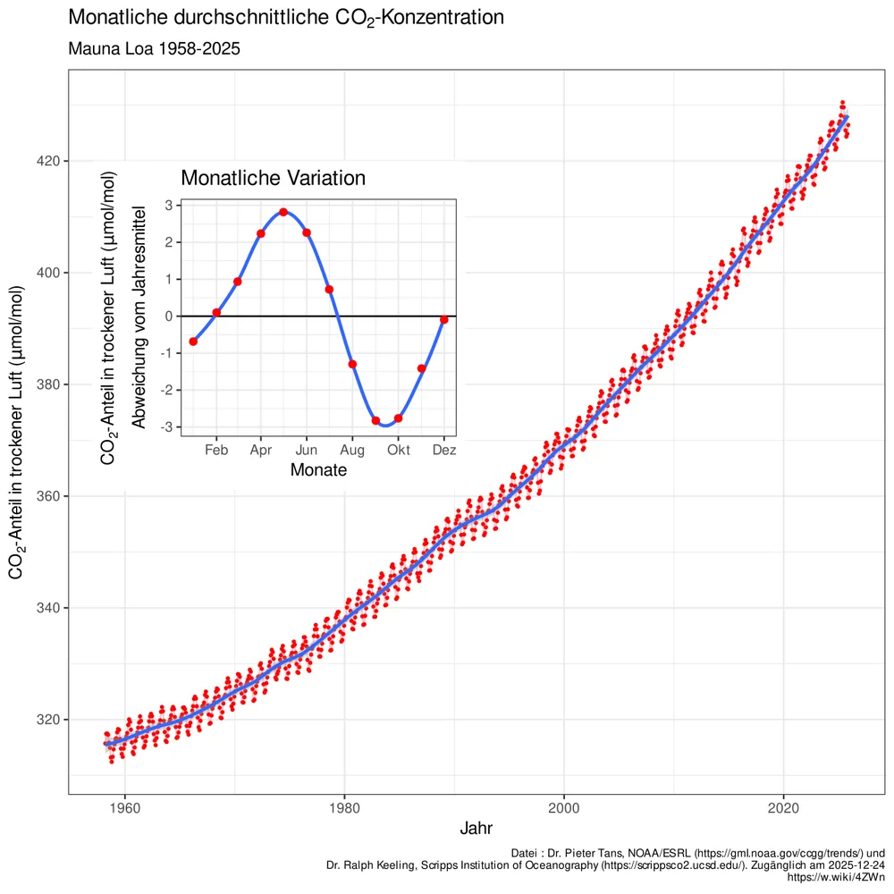
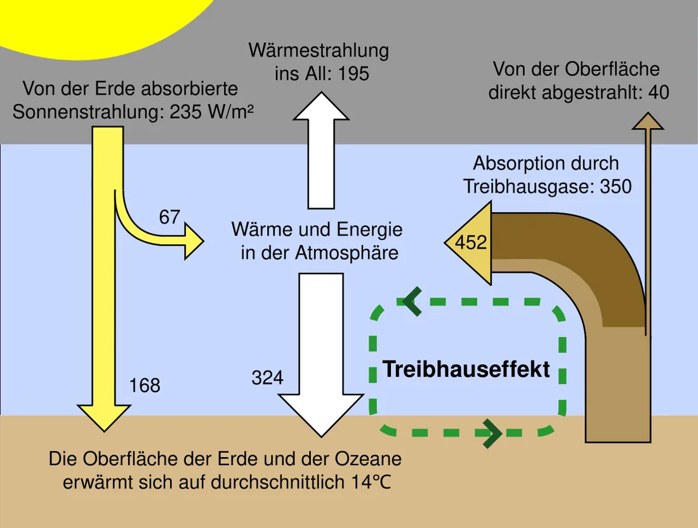

Kurz gesagt
- Die Erde wird wärmer.Das messen Forschende auf der ganzen Welt.
- Der Mensch ist die Hauptursache.Vor allem Kohle, Öl und Gas setzen CO₂ frei.
- Die Forschung ist sich einig.Offen ist: Wie schnell geht es weiter? Wie stark trifft es welche Region?

Woher wissen wir, dass der Mensch die Ursache ist?
- Das CO₂ in der Luft steigt.Vor 1850 waren es etwa 280 ppm. Heute sind es mehr als 420 ppm. (ppm heißt: Teile pro Million.) Eisbohrkerne zeigen: In den letzten 800 000 Jahren lag der Wert immer zwischen etwa 180 und 300 ppm.
- Das CO₂ hat einen Fingerabdruck.Kohle, Öl und Gas sind uralt. Sie enthalten kein C-14 mehr. C-14 ist eine besondere Art Kohlenstoff, die mit der Zeit zerfällt. Wenn man sie verbrennt, sinkt der Anteil von C-14 in der Luft. Genau das messen Forschende (Suess-Effekt).
- Die Sonne passt nicht.Seit Jahrzehnten wird die Sonne nicht stärker. Die Temperatur auf der Erde steigt trotzdem.
Quelle: Umweltbundesamt; bpb. Eigene Darstellung.
So funktioniert es: Gase wie CO₂ halten Wärme in der Lufthülle fest. Ohne diesen natürlichen Effekt wäre es auf der Erde im Mittel etwa −18 °C kalt. Mit ihm sind es etwa +15 °C. Mehr CO₂ verstärkt den Effekt.
Quelle: Umweltbundesamt. Eigene Darstellung, vereinfacht.

Bild: Oeneis, Daten von NOAA/ESRL und Scripps Institution of Oceanography, CC BY-SA 4.0, Wikimedia Commons. Verkleinert.
So liest du die Kurve
- Seit 1958 misst man auf dem Berg Mauna Loa (Hawaii) das CO₂ in der Luft.
- Die Linie steigt fast ohne Pause. Der Wert wächst von Jahr zu Jahr.
- Die Zacken zeigen die Jahreszeiten. Im Sommer nehmen Pflanzen CO₂ auf, dann sinkt der Wert kurz. Im Jahr danach liegt er trotzdem höher.
Beschreibe die Kurve in zwei Sätzen.
Für Neugierige: Die Energiebilanz der Erde

Was sagt die Forschung insgesamt?
Mehr als 99 % der Fachaufsätze, die zur Ursache Stellung nehmen, stützen den menschengemachten Klimawandel (Lynas u. a. 2021). Der Weltklimarat (IPCC) hält den Einfluss des Menschen für „äußerst wahrscheinlich“ die Hauptursache.
| Gesichert | Noch offen |
|---|---|
| Die Erde erwärmt sich. | Wie schnell geht die Erwärmung weiter? Das hängt auch davon ab, was wir tun. |
| Der Mensch ist die Hauptursache. | Wie stark trifft es einzelne Regionen? |
| Das CO₂ stammt vor allem aus Kohle, Öl und Gas. | Ab wann kippen einzelne Teile des Klimasystems? |
- Mehr als 99 stützen den menschengemachten Klimawandel.
- Weniger als 1 tut es nicht.
Quelle: Lynas u. a. 2021. Eigene Darstellung.
Fünf Mythen im Check
Tippe auf einen Mythos. Dann siehst du, was daran stimmt und was nicht.
„Das Klima hat sich schon immer gewandelt.“
Das stimmt: Es gab Eiszeiten und Warmzeiten.
Das stimmt nicht: Früher gab es natürliche Auslöser, zum Beispiel Änderungen der Erdbahn. Heute zeigen Messungen, dass die Ursache CO₂ aus Kohle, Öl und Gas ist. Außerdem geht die Erwärmung heute viel schneller als am Ende der letzten Eiszeit.
Deine Gegenfrage: „Was war damals die Ursache? Und was ist es heute?“
„Die Sonne ist schuld.“
Das stimmt: Die Sonne ist unsere Energiequelle. Sie hat früher das Klima beeinflusst.
Das stimmt nicht: Seit Jahrzehnten wird die Sonne nicht stärker. Die Erde wird aber wärmer. Die Sonne kann das nicht erklären.
Deine Gegenfrage: „Wie erklärst du, dass es wärmer wird, obwohl die Sonne nicht stärker wird?“
„Im Winter war es kalt. Wo ist die Erwärmung?“
Das stimmt: Kalte Tage und Schnee gibt es weiterhin.
Das stimmt nicht: Wetter und Klima sind nicht dasselbe. Wetter gilt für Tage und Wochen. Klima ist der Durchschnitt über viele Jahre, meist 30 Jahre.
Deine Gegenfrage: „Meinst du das Wetter von heute oder den Durchschnitt über 30 Jahre?“
„CO₂ ist nur 0,04 % der Luft. Das kann nichts bewirken.“
Das stimmt: CO₂ ist ein Spurengas. Es macht etwa 0,04 % der Luft aus. Das sind rund 420 ppm.
Das stimmt nicht: Auch kleine Mengen wirken stark (Faktencheck). Das zeigt der Treibhauseffekt: Ohne CO₂ und andere Treibhausgase wäre es etwa 33 °C kälter.
Deine Gegenfrage: „Ab welcher Menge wirkt ein Stoff nicht mehr? Woher weißt du das?“
„Die Forschenden sind sich nicht einig.“
Das stimmt: Forschende streiten über Einzelheiten, zum Beispiel über das Tempo und über Folgen in einzelnen Regionen.
Das stimmt nicht: Über die Ursache gibt es kaum Streit. Mehr als 99 % der Fachaufsätze stützen den menschengemachten Klimawandel.
Deine Gegenfrage: „Worüber sind sie uneinig: ob der Mensch die Ursache ist oder wie schnell es weitergeht?“
Fünf Tricks der Desinformation
Viele falsche Aussagen nutzen dieselben Tricks. Wer sie kennt, erkennt sie schneller.
- Falsche Experten: Jemand klingt wie ein Fachmann, forscht aber nicht zum Klima.
- Rosinen picken: Es werden nur Zahlen gezeigt, die passen. Zum Beispiel ein kalter Winter statt 30 Jahre.
- Unmögliche Forderungen: „Erst wenn alles zu 100 % bewiesen ist, glaube ich es.“ Absolute Sicherheit gibt es in der Forschung nie. Starke Belege reichen.
- Falsche Logik: „Früher war es auch warm. Also ist der Mensch nicht schuld.“ Das eine folgt nicht aus dem anderen.
- Verschwörung: „Die da oben verschweigen es.“ Dann müssten Forschende in vielen Ländern gleichzeitig schweigen.
Quelle: nach dem FLICC-Modell von John Cook
So sprichst du ruhig darüber
- Erst zuhören. Frage nach: „Wie meinst du das genau?“
- Die Sorge suchen. Hinter „Das ist Panikmache“ steckt oft Angst vor Kosten oder Verboten. Frage: „Was macht dir dabei Sorgen?“ Wichtig: Ob der Mensch die Ursache ist, ist eine Frage der Fakten. Was wir tun sollen, ist eine politische Frage. Trenne beides.
- Ein Punkt statt zehn. Wähle ein Argument und erkläre es gut.
- Fakt – Mythos – Fakt. Nenne zuerst den gesicherten Fakt. Erkläre dann kurz, wie der Mythos in die Irre führt. Nenne am Ende den Fakt noch einmal.
- Nach Quellen fragen. „Woher hast du das?“ Nenne auch deine Quelle.
- Gemeinsames suchen. „Wir wollen beide gute Informationen.“
- Du musst nicht gewinnen. Wer sich schon festgelegt hat, lässt sich selten umstimmen. Mehr bewirkst du bei Menschen, die noch unsicher sind oder nur mitlesen. Du darfst aufhören: „Wir sehen das verschieden. Ich schicke dir gern meine Quelle.“
- Person A: „Das Klima hat sich schon immer gewandelt.“
- Du: „Stimmt, das gab es. Der Wandel früher hatte natürliche Ursachen.“
- Du: „Heute zeigen Messungen: Das CO₂ kommt aus Kohle, Öl und Gas. Und die Erwärmung geht viel schneller als früher.“
- Du: „Was war deiner Meinung nach früher die Ursache? Und woher hast du die Information?“
Du schreibst für alle, die mitlesen. Bleib sachlich und nenne eine Quelle. Auf Beleidigungen antwortest du nicht. Du kannst sie melden.
Weiterlesen
Diese Links führen auf fremde Seiten und öffnen in einem neuen Tab. Prüfe sie mit dem Quellencheck.
- klimafakten.de: Fakten, Mythen und Tipps für Gespräche
- co2online: Lügen, Mythen, Missverständnisse
- Helmholtz-Klima-Initiative: Die Sonne verursacht den Klimawandel?
- Mimikama: Klima-Desinformation erkennen
- Das stimmt so nicht!: ein kleines Buch mit Gegenargumenten zu häufigen Falschaussagen im Alltag. Es geht um viele Themen, nicht nur um das Klima.
„Das stimmt so nicht!“ ist eine Initiative von Vereinen, unter anderem HateAid und Mein Grundeinkommen. Frage 1 aus dem Quellencheck gilt auch hier: Wer steckt dahinter? Was will der Absender erreichen? Ein Verein darf eine Meinung vertreten. Du solltest es trotzdem wissen, wenn du seine Aussagen prüfst.
Quellen der Zahlen: Lynas u. a. 2021 (Environmental Research Letters); IPCC 2013; Umweltbundesamt: CO₂-Konzentration; Umweltbundesamt: Rekordwerte; bpb: Kohlenstoffdioxid; Messreihe Mauna Loa (NOAA); Eisbohrkerne aus der Antarktis (Lüthi u. a. 2008); Umweltbundesamt: Klima und Treibhauseffekt; Umweltbundesamt: Häufige Fragen; Deutscher Wetterdienst: Klima.